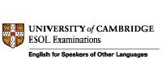

English Language Certificate – FCE – First Certificate in English – University of Cambridge, ESOL Examinations;

Bachelor Degree in Computer Science – UFSJ – Federal University of São João del Rei;
Attending Post Graduation in Application Development for Mobile Devices and Cloud Computing in National Institute of Telecommunications - Inatel, end forecast: December/2016;